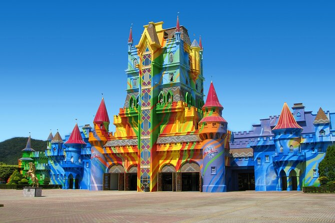
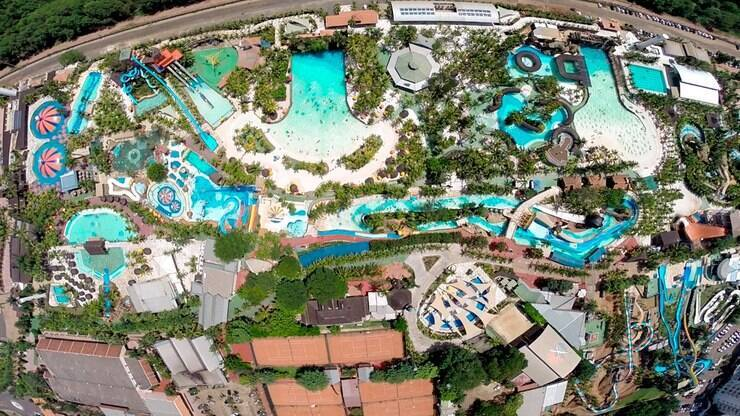
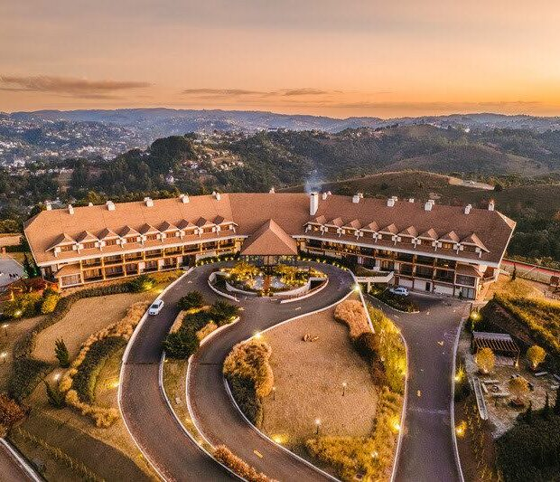

Praias do Brasil🌊
Copacabana - RJ


Restaurantes recomendados
- Nossa primeira recomendação é o restaurante Marius. Conhecido por sua cozinha Brasileira e Mediterrânea.
- Nossa segunda recomendação é o restaurante Fogo de chão. Conhecido por sua sofisticada rede brasileira de rodízio de carnes servidas à mesa e variado buffet de saladas.
- Nossa terceira recomendação é o restaurante Emile. que apresenta uma gastronomia jovem, atualizada, criativa. O Chef Camilo executa receitas contemporâneas com ingredientes locais. Pratos que surpreendem com a combinação perfeita de texturas, sempre utilizando ingredientes brasileiros, como farofas e frutas tropicais, com sabores e cores marcantes, sua marca registrada é apresentação colorida.
O que fazer em Copacabana
- O clássico: você pode tomar sol, pegar um bronzeado, nadar ou simplismente relaxar na areia com uma água de coco.
- Forte de copacabana: Oficialmente denominado como Museu Histórico do Exército / Forte de Copacabana (MHEx/FC), computa atualmente um fluxo de cerca de dez mil visitantes por mês, constituindo-se em um dos mais belos cartões-postais da cidade.
- Feirinha de copacabana: A Feira da Praia de Copacabana atrai viajantes e moradores todos os dias para o calçadão mais famoso do Brasil. No meio da Avenida Atlântica, principal via que acompanha a orla do bairro, as pessoas podem conferir mais de 150 barracas com produtos variados.
Lençóis Maranhenses - MR


Restaurantes recomendados
- Nossa primeira recomendação é o restaurante La Ferme de Georges. O restaurante que é uma bela aventura culinária. É um daqueles lugares raros onde todos podem se sentir à vontade e são incentivadas a se envolverem e apresentar ideias frescas para o cardápio.
- Nossa segunda recomendação é o restaurante Cozinha Do Rancho Das Dunas. Nesse rastaurante cada prato é uma homenagem aos sabores locais, preparados com ingredientes frescos e técnicas tradicionais.
- Nossa terceira recomendação é o restaurante Casa de Juja Atins. Esse é um restaurante clássico quando se trata de comida nordestina sofisticada, essa é a melhor definição para descrever a experiência de jantar nesse estabelecimento.
O que fazer em Lençóis Maranhenses
- Atins: É um povoado descolado, localizado entre o mar, o Rio Preguiças e o Parque Nacional dos Lençóis Maranhenses. Atins pode ser visitado em um passeio de um dia a partir de Barreirinhas, mas temos a certeza de que, ao chegar por lá, sua vontade vai ser de ficar, por isso, organize-se para passar ao menos duas noites na região.
- Santo Amaro: Ainda pouco explorada pelo turismo, Santo Amaro é um paraíso onde estão as mais belas lagoas do circuito principal de hospedagens na região.
- Passeio da Betânia: O Passeio da Betânia é o mais turístico da região, e não é por menos. Nessa área, existem muitas lagoas lindas e de cores diferentes.
Praia Brava - RJ


Restaurantes recomendados
- Nossa primeira recomendação é o restaurante Místico Restaurant. Com um novo bar e mesas ao ar livre de frente para a vista panorâmica da Baía da Armação, o restaurante cria um ambiente ideal para degustar os produtos frescos e os melhores pescados da região.
- Nossa segunda recomendação é o restaurante La Gare. De frente para a bucólica Praça dos Ossos e localizado no charmoso Hotel Vila da Santa, o La Gare oferece uma cozinha mediterrânea tropicalizada, que desperta os sentidos e celebra o melhor dos sabores.
- Nossa terceira recomendação é o restaurante Rocka. O restaurante traz a intensidade e a sofisticação que marcam o encontro perfeito entre o mar e a alta gastronomia
O que fazer na Praia Brava
- Baladas buzianas: Essas baladas costumam terminar apenas quando o sol está nascendo. E basta emendar com mais um dia de praia para você não parar!
- Orla Bardot: À beira da Praia da Armação, a Orla Bardot abraça os visitantes com uma linda vista e clima extremamente bucólico. É lugar para passear calmamente, apreciando a paisagem de barcos e casarões coloniais ao pôr do sol.
- Porto da Barra: O local, construído à beira-mar, oferece ambientes descolados e aconchegantes para quem deseja continuar curtindo depois da praia.
Fernando de Noronha - PR


Restaurantes recomendados
- Nossa primeira recomendação é o restaurante Restaurante do Vale. A proposta do restaurante é guiada pela valorização de ingredientes nativos, cultivados na horta própria ou adquiridos de produtores da ilha, respeitando o tempo da natureza e o sabor de cada estação.
- Nossa segunda recomendação é o restaurante Teju-Açu. O restaurante da Teju-Açú é, por si só, uma atração imperdível para quem visita Noronha. Seu arrojado projeto arquitetônico previu o mínimo de interferência no solo e o uso de madeira de reflorestamento
- Nossa terceira recomendação é o restaurante O Pico. Comida, diversão e arte. O lugar perfeito para encontrar amigos depois da praia, tomar um vinho, um drink ou uma cerveja gelada. Aqui você vai se surpreender com um menu variado e cuidadosamente planejado para oferecer o máximo em sabor. Pratos principais, sanduíches, e sobremesas. Aqui também tem boa música, um ambiente acolhedor e muita alegria.
O que fazer em Fernando de Noronha
- Morro Dois Irmãos: Um dos cartões postais da ilha, ótimo para fotos e admirar a paisagem.
- Mirantes: Diversos mirantes espalhados pela ilha, como o Mirante do Boldró e o Mirante da Praia do Sueste, oferecem vistas panorâmicas espetaculares.
- Ilha Tour: OUm passeio que percorre os principais pontos turísticos da ilha, ideal para quem visita Noronha pela primeira vez.
Praia dos Carneiros - PR


Restaurantes recomendados
- Nossa primeira recomendação é o restaurante Beijupirá. Sob um belíssimo coqueiral e um gramado perfeito, integrado a Pousada Pontal dos Carneiros, encontram-se o Restaurante Beijupirá. O Restaurante está a poucos passos do melhor trecho da Praia dos Carneiros e do Rio Formoso, ambiente de natureza exuberante e visual paradisíaco.
- Nossa segunda recomendação é o restaurante Casa da Moranga. A Casa da Moranga é o único restaurante especializado em morangas recheadas do Brasil. Localizado em Tamandaré, cidade da paradisíaca Praia dos Carneiros, une a simplicidade do nosso lar com a qualidade da nossa gastronomia pra te surpreender.
- Nossa terceira recomendação é o restaurante Bora Bora. Bora Bora é um restaurante à beira-mar com muito espaço e lugares para sentar, relaxar, comer ou beber uma gelada! Tem um cardápio enorme com uma variedade de comidas deliciosas, sem falar nos drinks mais lindos que já vi. A sua localização ideal oferece acesso direto à praia e fica a poucos passos da famosa igreja dos Carneiros!
O que fazer em Fernando de Noronha
- Morro Dois Irmãos: Um dos cartões postais da ilha, ótimo para fotos e admirar a paisagem.
- Mirantes: Diversos mirantes espalhados pela ilha, como o Mirante do Boldró e o Mirante da Praia do Sueste, oferecem vistas panorâmicas espetaculares.
- Ilha Tour: OUm passeio que percorre os principais pontos turísticos da ilha, ideal para quem visita Noronha pela primeira vez.
Dicas pra não perder as crianças na praia
Em praias movimentadas, é essencial ficar atento às crianças. Algumas dicas:
- Mantenha um ponto de encontro definido.
- Use pulseiras de identificação nas crianças.
- Ensine às crianças seus nomes completos e números de telefone.
- Esteja atento à ocalização das salva-vidas.
- Evite praias muito movimentadas.
- Incentive as crianças a não se afastarem muito.
- Use uma barraca ou guarda-sol colorido como ponto de referência.
- Esteja ciente dos arredores e identifique pontos de referência fixos.
Outros lugares para você visitar nas suas próximas férias!
Beto Carrero World!
O maior parque temático da América Latina, localizado em Penha, Santa Catarina. Ele oferece mais de 100 atrações para todas as idades, incluindo brinquedos radicais, áreas temáticas, shows internacionais, zoológico e áreas inspiradas em filmes e desenhos animados como Hot Wheels, Madagascar e DreamWorks.
Thermas dos Laranjais!
O Thermas dos Laranjais, em Olímpia, São Paulo, é um dos maiores parques aquáticos do mundo, famoso por suas águas termais e diversas atrações para todas as idades. O parque oferece mais de 55 atrações, incluindo toboáguas, piscinas de ondas, rio lento com corredeiras, praia artificial, área kids e muito mais.
Bendito Cacao Resort!
No ponto mais alto de uma montanha, a 1700 metros de altitude e vista de 360 graus da cidade de Campos do Jordão, o Bendito Cacao Resort & Spa vai além da hospedagem. O hotel foi especialmente pensado e decorado para oferecer momentos únicos, por meio de experiências intensas de imersão na cultura do cacau.